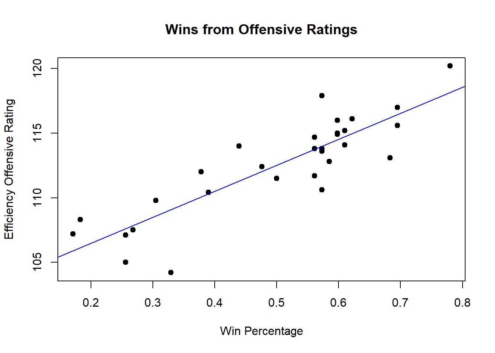

Pandas STAT 107 Final Project - How to win an NBA Championship
Quarto
Quarto enables you to weave together content and executable code into a finished document. To learn more about Quarto see https://quarto.org.
Running Code
When you click the Render button a document will be generated that includes both content and the output of embedded code. You can embed code like this:
plot(Nba_stats$W_PCT, Nba_stats$E_OFF_RATING, main ="Wins from Offensive Ratings", xlab ="Win Percentage", ylab ="Efficiency Offensive Rating", pch =19)abline(lm(E_OFF_RATING~W_PCT, data = Nba_stats), col ='blue')

plot(Nba_stats$W_PCT, Nba_stats$E_DEF_RATING, main ="Wins from Defensive Ratings", xlab ="Win Percentage", ylab ="Efficiency Defensive Rating", pch =18)abline(lm(E_DEF_RATING~W_PCT, data = Nba_stats), col ='red')
The top scatter plot “Wins from Offensive Rating” depicts that there is a positive correlation between efficiency offensive rating and win percentage. A team has a higher win percentage when their offensive ratings are higher. The scatter plot “Wins from Defensive Ratings” shows that there is a negative correlation between efficiency defensive rating and win percentage. A higher defense rating results in a lower win percentage. This doesn’t mean that a team with high defense will lose, but it goes to show that a balance of offensive and defensive rating is needed to win rather than one stats alone
#head(Nba_stats, 15)Nba_above_500 <-subset(Nba_stats, Nba_stats$W_PCT >=0.500)Nba_below_500 <-subset(Nba_stats, Nba_stats$W_PCT <0.500)col1 =rgb(1, 0, 0, 0.25)col2 =rgb(0, 0, 1, 1)hist(Nba_above_500$E_OFF_RATING, col = col1, main ="Offensive Rating For Teams Above 50% Win Percentage vs Below", xlab ="Offensive Rating")hist(Nba_below_500$E_OFF_RATING, col = col2, add =TRUE)
The above graph shows the frequency of offensive ratings for teams that perform well in the NBA (teams that win 50% or more of their season games), versus the teams that perform poorly in the NBA (teams that win less than 50% of their season games). The pink part of the histogram are the teams that win 50% or more of their games, and the blue part of the histogram are the teams that win less than 50%. As we see, the teams that win more have significantly high offensive ratings when compared to the teams that win less. This shows that a team with a high offensive rating is likely to win more games. However, the next graph will show that there is a current trend in the NBA where offense wins games over defense. Defense does not correlate to winning as much as offense.
col1 =rgb(1, 0, 0, 0.25)col2 =rgb(0, 0, 1, 1)hist(Nba_above_500$E_DEF_RATING, col = col1, main ="Defensive Rating For Teams Above 50% Win Percentage vs Below", xlab ="Defensive Rating")hist(Nba_below_500$E_DEF_RATING, col = col2, add =TRUE)
This graph shows that teams that win more actually have a lower defensive rating. Although causation does not equal correlation, we can say that offense is more important to winning a basketball game than defense in today’s NBA. Now that we have narrowed down winning a nba game into a offensive stat, the next question we can try to answer is: Which stat correlates most with offensive rating? In the graph below, I will see how the pace of an NBA team affects their offensive rating. Do teams with a higher pace (teams that move faster - more possessions per game) result in higher offensive rating?
plot(Nba_stats$E_PACE, Nba_stats$E_OFF_RATING, main ="Pace vs. Offensive Rating", xlab ="Pace", ylab ="Efficiency Offensive Rating", pch =19)abline(lm(E_OFF_RATING~E_PACE, data = Nba_stats), col ='blue')
As we can see by this graph, there is not much correlation between how fast a team plays and how well its offense does. Some slower teams have great offenses while faster teams also have great offenses.
plot(Nba_stats$E_AST_RATIO, Nba_stats$E_OFF_RATING, main ="Assist Ratio vs. Offensive Rating", xlab ="Assist Ratio", ylab ="Efficiency Offensive Rating", pch =19)abline(lm(E_OFF_RATING~E_AST_RATIO, data = Nba_stats), col ='blue')
By this graph, we can see that a team that has a higher ratio of assists correlates to a better offense. This means that a teams ability to put teammates in high percentage situations of making shots and getting assists leads to a better offensive rating, which then causes an NBA team to win more games.
Another important statistic in NBA games is rebounding efficiency. Our dataset provides both offensive rebounding efficiency and defensive rebounding efficiency. The boxplots below represent the average efficiencies of the two categories
As shown in the two boxplots above, teams tend to have almost a 50% increase in defensive rebound efficiency than offensive rebound efficiency. This inclines that teams are much more successful at obtaining defensive rebounds over offensive rebounds. Now, let’s dive deeper into defensive rebounding efficiency and see how it correlates with team success.
Based on the graph above, there does seem to be a relationship between how many games a team wins versus how efficient they are at getting defensive rebounds. As the total amount of wins increase, defensive rebound efficiency percentages also increase. Based on our data, defensive rebounding efficiency is also a main contributor into a team’s success.